34 33 505 Removing and Installing/Replacing Brake Booster
34 33 505 Removing and installing or replacing brake booster

Necessary preliminary tasks:
- Read and comply with General Information.
- Remove brake master cylinder
- Remove hydraulic unit
- Remove left footwell trim
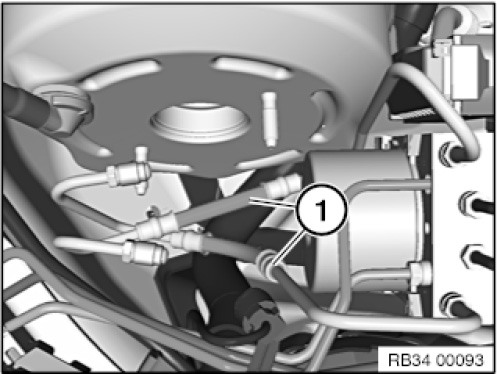
IMPORTANT:
There is a risk of switching the two brake lines (1).
After the master cylinder and hydro aggregate have been removed, the two brake lines (1) will be exposed.
The installation position (see graphic) of the brake lines (1) must be marked prior to removal.
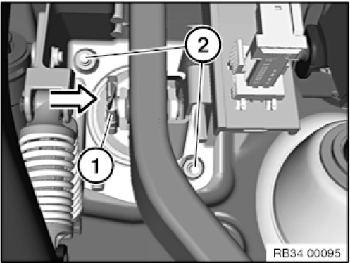
Pull the retaining clip (1) off the brake pedal and pull out the locking pin.
Unscrew nuts (2).
Installation note:
Replace self-locking nuts.
Tightening torque 35 11 1AZ.
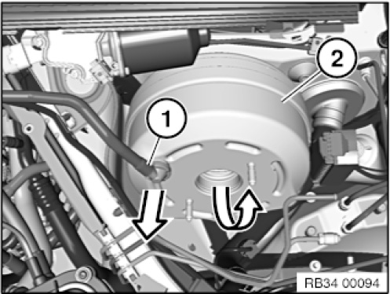
IMPORTANT:
Do not use any force when removing and installing the brake booster; the brake booster can be damaged under certain circumstances.
Brake lines must not be bent.
Remove non-return valve (1) from brake booster.
Carefully pull brake booster (2) out of bulkhead and tilt out.
If necessary, disengage brake line from holder on bulkhead and press slightly to one side.
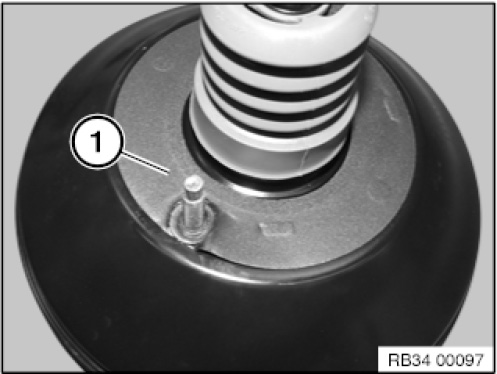
Seal (1) must always be replaced.


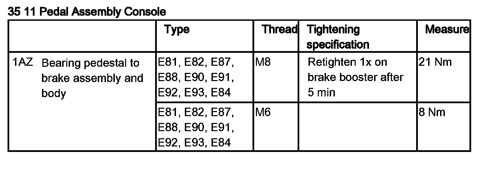
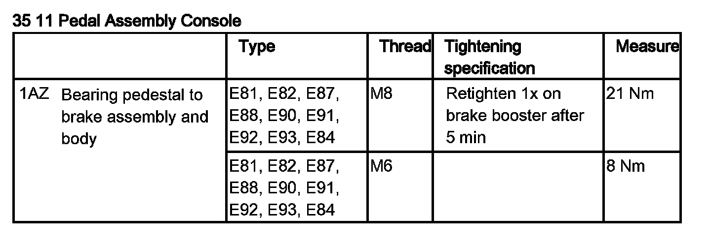
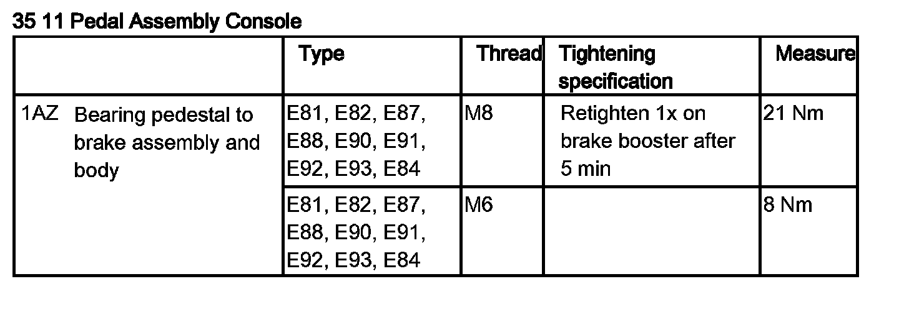
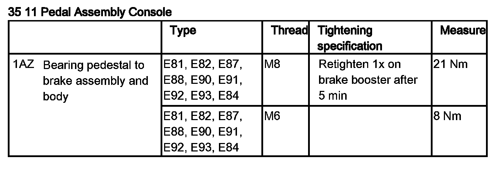
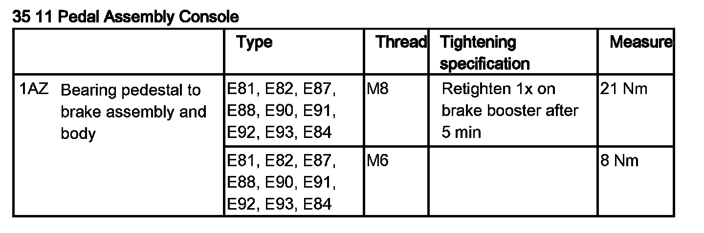
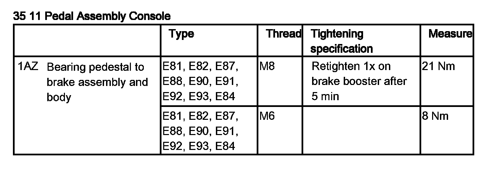
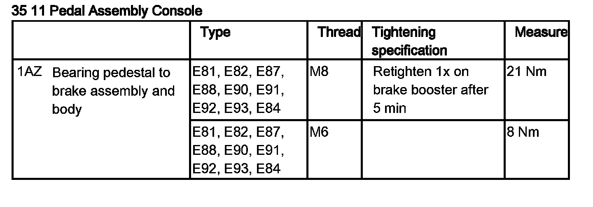
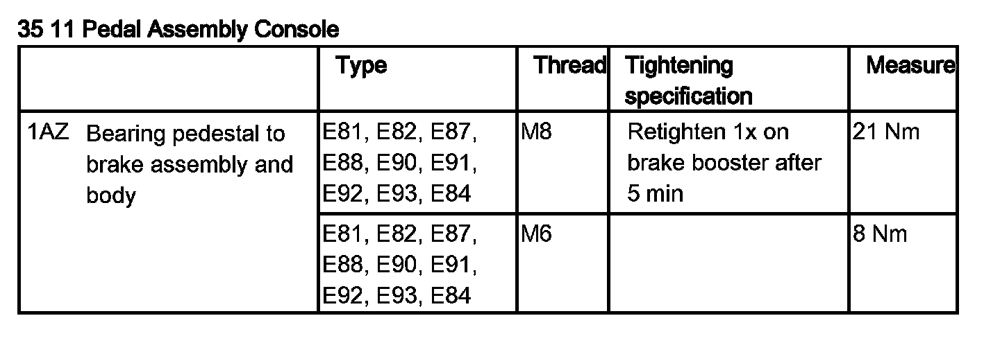
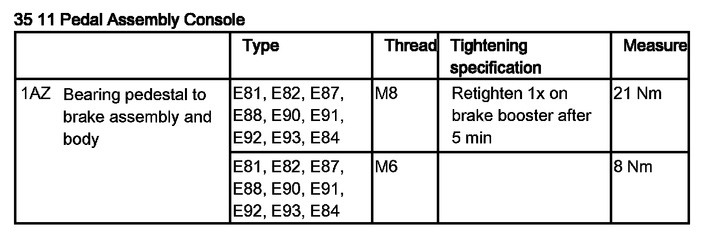
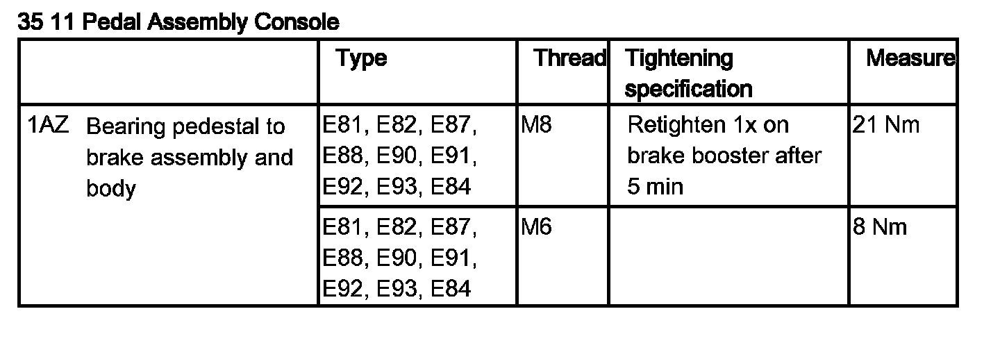